ROLEFORGE 0.76.0 · SILLYTAVERN 1.19.0
หน้าต่างเหนือ Chatbar
ตั้งค่าจากหน้าเดียว
ภาพจาก SillyTavern ที่รันทดสอบจริง ใช้ธีม Dark Lite
Extensions → RoleForge → หน้าต่างเหนือ Chatbar
ตั้งค่าทุกหน้าต่างในที่เดียวExtensions → RoleForge → หน้าต่างเหนือ Chatbar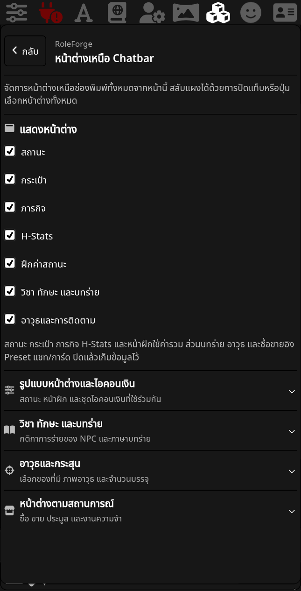
ตั้งค่าบน PCหน้าเดียวกัน ใช้รูปแบบและสีตามธีม SillyTavern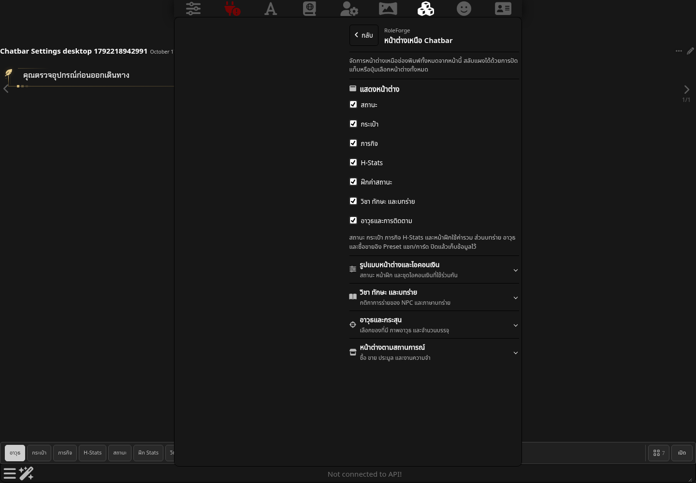
บทร่ายอยู่ในหน้าเดียวกันกติกา NPC และภาษาบทร่ายอยู่ในหัวข้อพับได้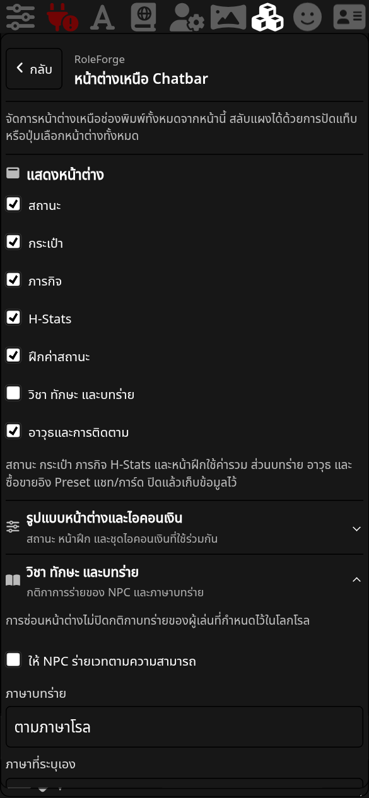
หน้าต่างตามสถานการณ์เปิดระบบซื้อ ขาย ประมูล และ Memory จากหน้าเดียวกัน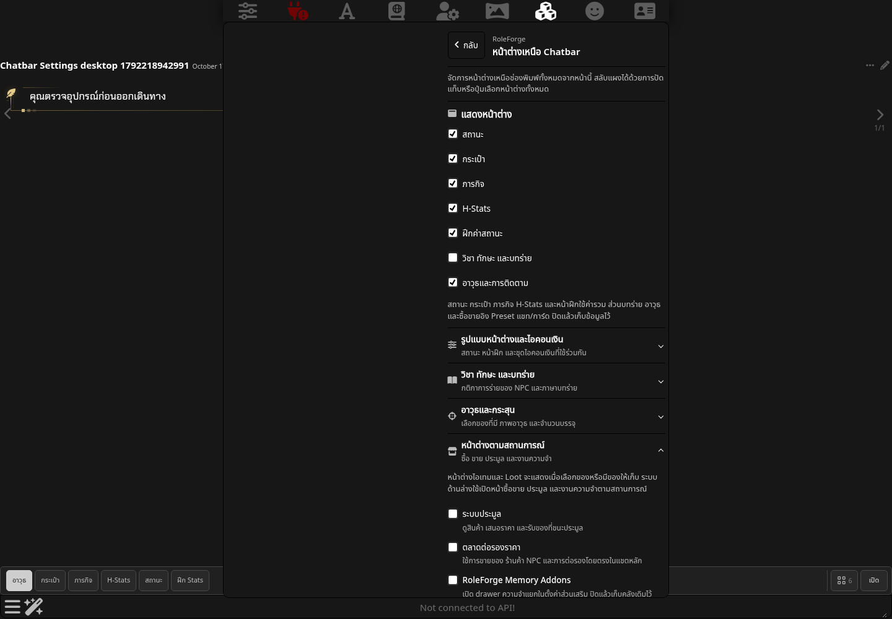
ภารกิจแบบใหม่เป้าหมายถัดไป ความคืบหน้า รางวัล และตัวเลือกภารกิจ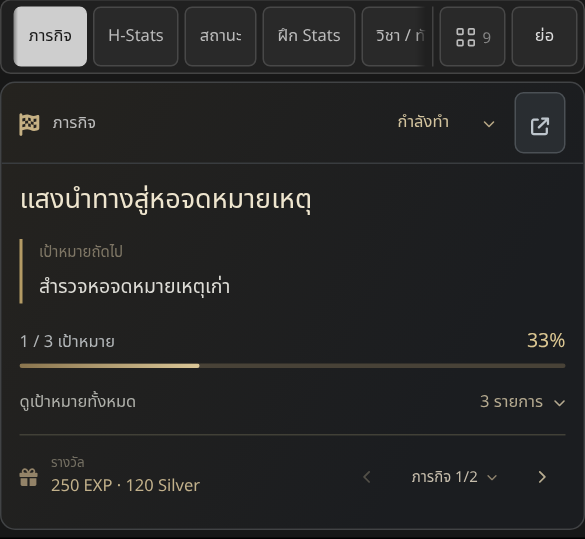
ภารกิจบน PCปัดแถบแท็บหรือใช้ปุ่มสี่ช่องเพื่อเลือกทุกหน้าต่าง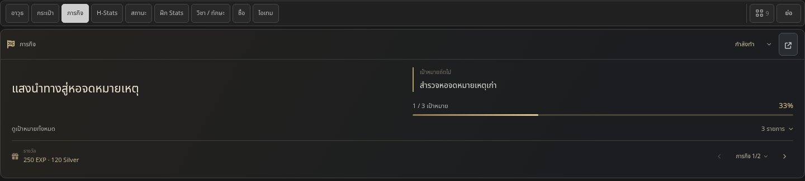
กระเป๋าเหนือช่องพิมพ์ค้นหา แบ่งหมวด และแตะของเพื่อเปิดรายละเอียด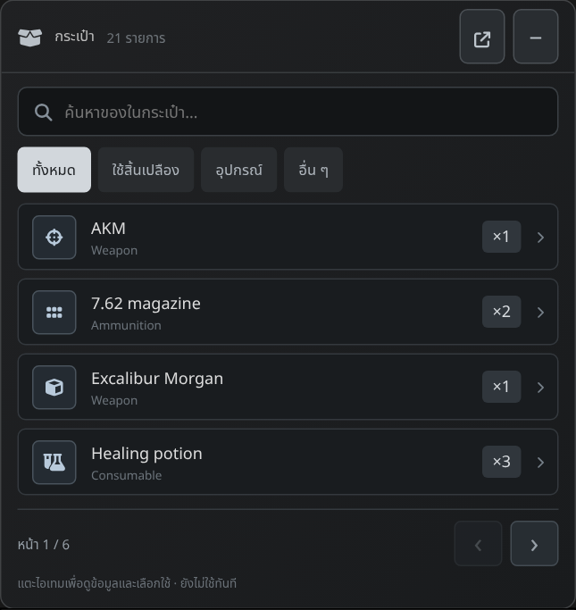
กระเป๋าบน PCดูของที่มีอยู่จริงโดยไม่ต้องเปิดหน้าหลัก RoleForge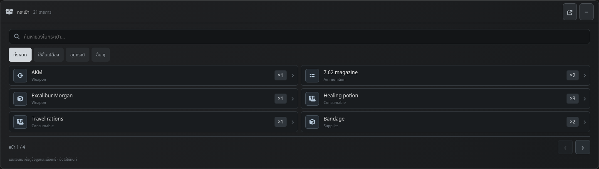
H-Stats ที่เลือกเปิดเองได้แสดงข้อมูลที่บันทึกไว้ ช่องที่ไม่ทราบยังคงไม่ทราบ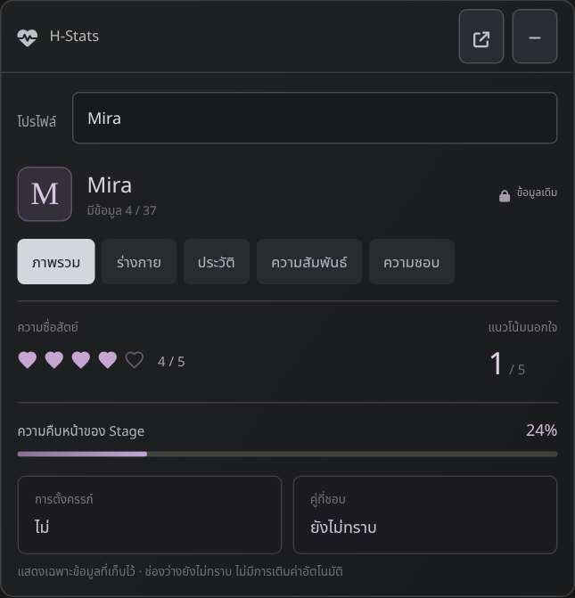
H-Stats บน PCเลือกโปรไฟล์และหมวด โดยไม่เรียก AI จากการเปิดดู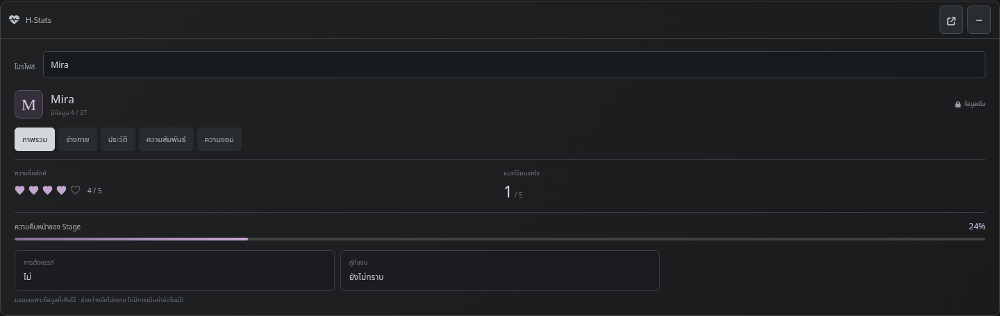
แท็บประมูลเมื่อมีหลายหน้าต่างตัวเลือกทั้งหมดและปุ่มย่อมีพื้นที่ของตัวเอง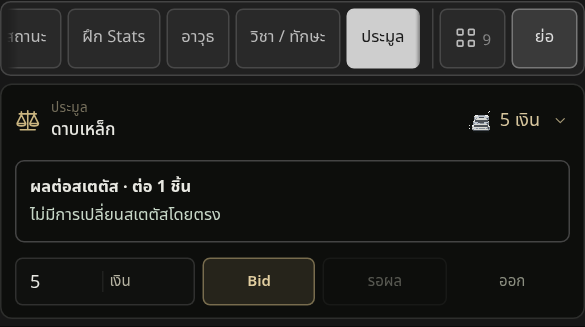
หลายแท็บบน PCเข้าถึงหน้าซื้อ ขาย หรือประมูลได้ครบ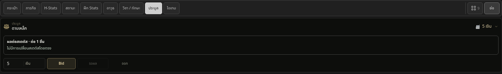
มือถือทดสอบด้วย Chromium จำลองหน้าจอและสัมผัส การเจนข้อความใช้ SSE fixture ภายในผ่าน Generate ของ SillyTavern ไม่มีการเรียกโมเดลภายนอกระหว่างทดสอบ